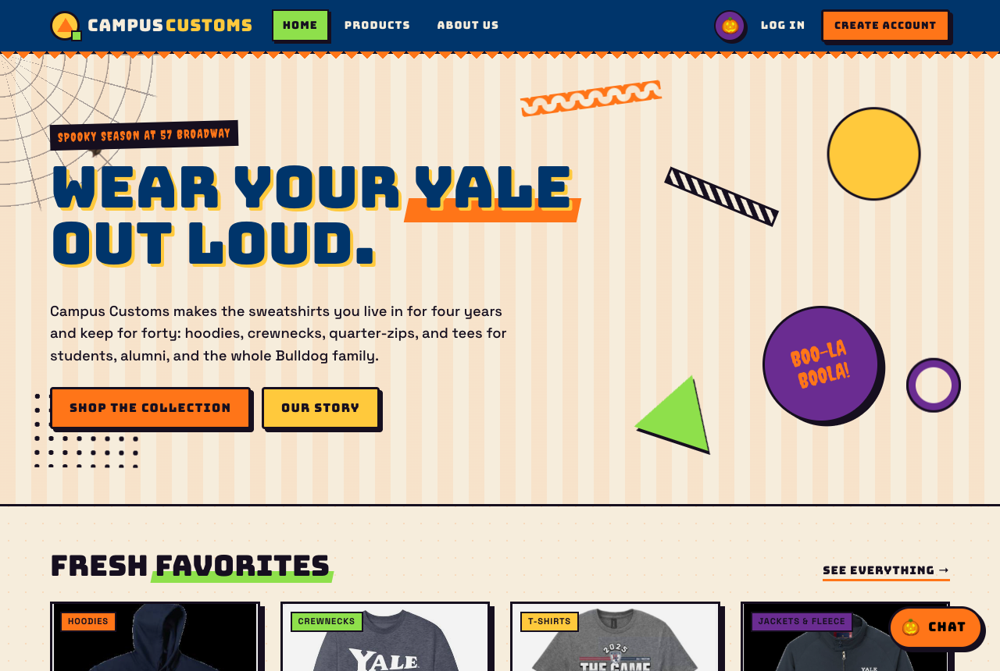
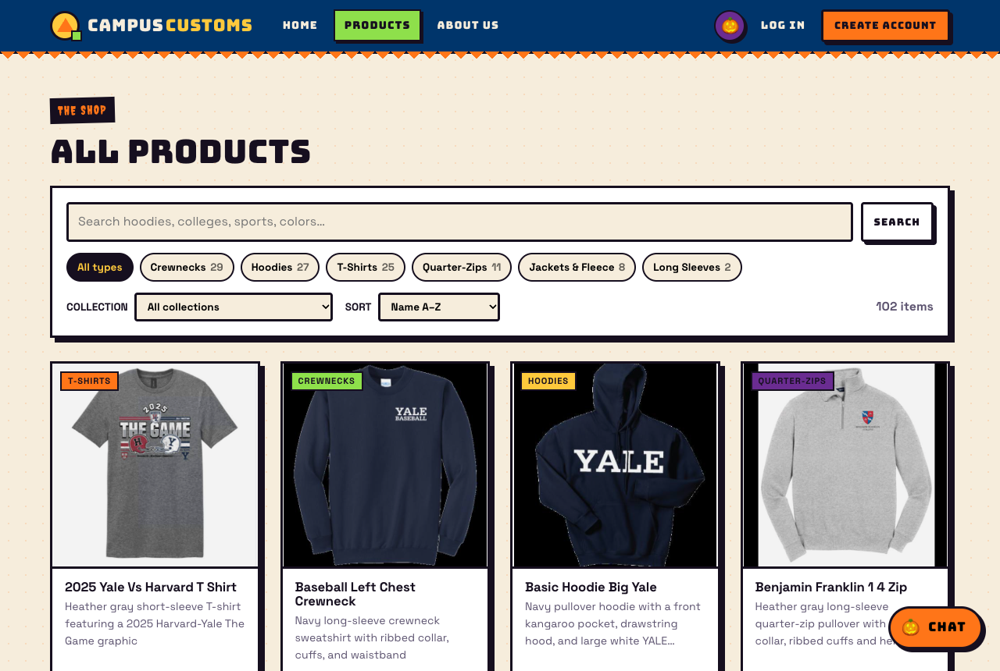
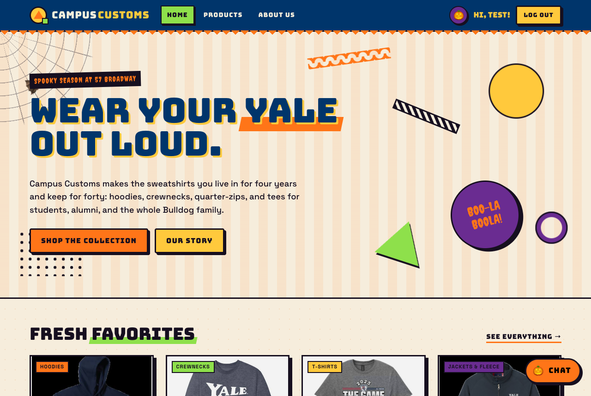
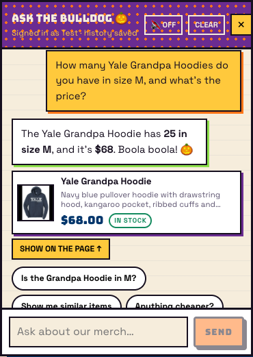
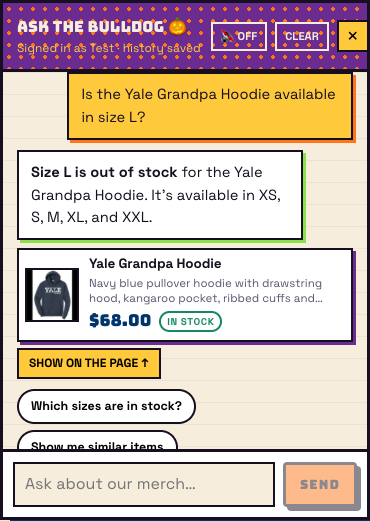
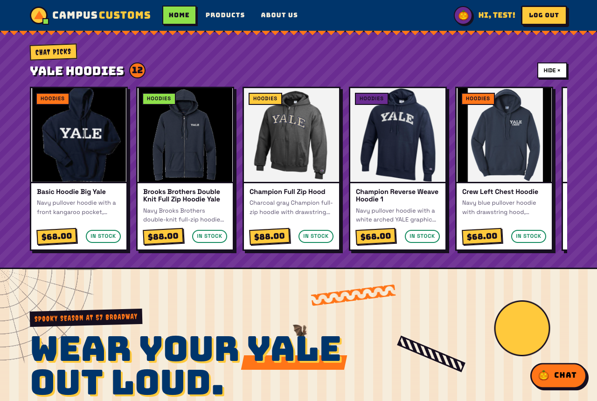
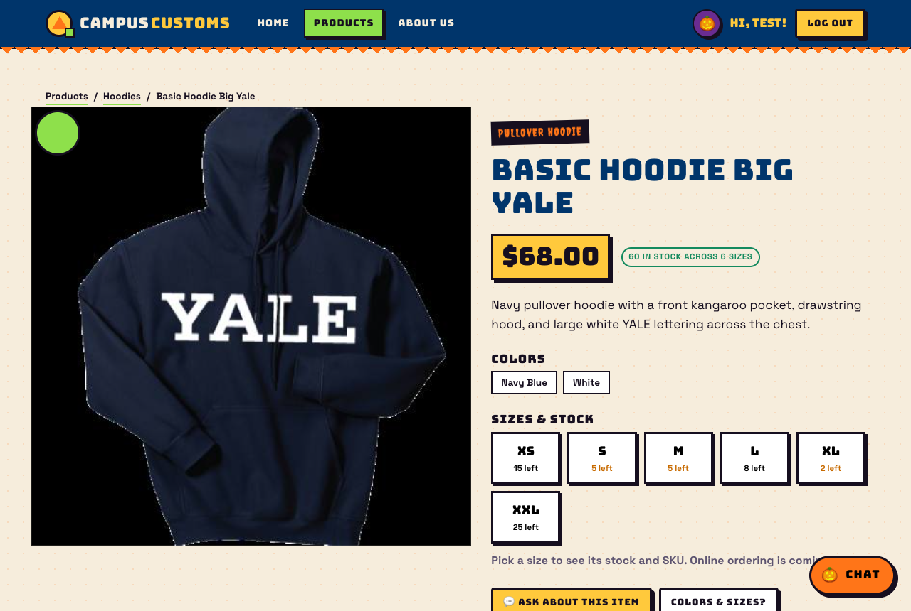
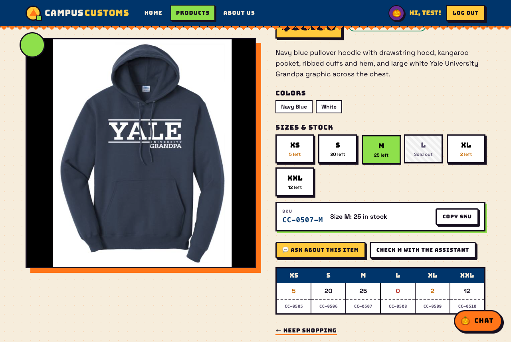
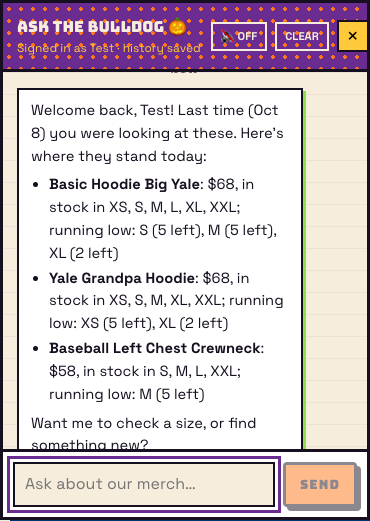

tools/app_check.py (Playwright driving Chrome), and one or two sentences on what it proves. Expected values
come straight from the database, so PASS means the app matched the data. Click a screenshot to open it full size.
- 1. The site loads: home page with navigation ✅
- 2. Products page lists the whole catalogue as cards ✅
- 3. The seeded test user can log in ✅
- 4. Chat checks inventory: exact stock and price from the database ✅
- 5. Chat says definitively when a size is out of stock ✅
- 6. A category question (“What hoodies do you have?”) returns dynamic product cards ✅
- 7. Clicking a chat-surfaced card opens the full product page ✅
- 8. Problem 9 usability feature: SKU info on the product page ✅
- 9. Problem 9 usability feature: chat history reloads with a welcome-back recap ✅
1. The site loads: home page with navigation PASS

What this proves: The React/Vite storefront is up and talking to the FastAPI backend: the nav links (Home, Products, About Us, Log In, Create Account) render, and the featured products are loaded from the API.
| Theme | halloween |
|---|---|
| Featured cards | 4 |
2. Products page lists the whole catalogue as cards PASS

What this proves: All 102 rows of the catalogue table appear as product cards (image, name, price, one-liner), fed by GET /api/products.
| Cards on page | 102 |
|---|---|
| Rows in catalogue table | 102 |
3. The seeded test user can log in PASS

What this proves: Logging in as test@campuscustoms.yale.edu with the provided password succeeds (the nav greets “Hi, Test!”), so the seeded PBKDF2 hash verifies against the backend.
| Nav greeting | Hi, Test! |
|---|
4. Chat checks inventory: exact stock and price from the database PASS

What this proves: Asked about size M of the Yale Grandpa Hoodie, the chat answered with 25 in stock at $68, exactly the values in the inventory and catalogue tables.
| Question | How many Yale Grandpa Hoodies do you have in size M, and what's the price? |
|---|---|
| Chat reply | The Yale Grandpa Hoodie has 25 in size M, and it’s $68. Boola boola! 🎃 |
| Database | price $68; M = 25 |
5. Chat says definitively when a size is out of stock PASS

What this proves: Size L has quantity 0 in the database, and the chat states plainly that it is out of stock (no hedging), then offers the sizes that are in stock.
| Question | Is the Yale Grandpa Hoodie available in size L? |
|---|---|
| Chat reply | Size L is out of stock for the Yale Grandpa Hoodie. It’s available in XS, S, M, XL, and XXL. |
| Database | XS=5, S=20, M=25, L=0, XL=2, XXL=12 |
6. A category question (“What hoodies do you have?”) returns dynamic product cards PASS

What this proves: The agent searched the catalogue and the site rendered 12 hoodie cards in the “Chat picks” strip (and in the chat). Every card's category is Hoodies and every price matches the database.
| Chat reply | We have 27 hoodies in total, and I’ve pulled up 12 options below to browse. Boola boola! 🎃 |
|---|---|
| Strip title | YALE HOODIES 12 |
| Cards | 12 |
| Price mismatches vs DB | 0 |
7. Clicking a chat-surfaced card opens the full product page PASS

What this proves: The first chat card opened /products/basic-hoodie-big-yale with the large image, full description, price, sizes and stock, the same single-item page as the Products grid.
| URL | /products/basic-hoodie-big-yale |
|---|---|
| Name / price | Basic Hoodie Big Yale / $68.00 |
8. Problem 9 usability feature: SKU info on the product page PASS

What this proves: Picking size M shows SKU CC-0507-M with its stock count and a Copy SKU button. The SKU is built from that size's permanent inventory-table id, so staff and shoppers can name the exact unit.
| SKU shown | CC-0507-M |
|---|---|
| Expected from inventory.id | CC-0507-M |
9. Problem 9 usability feature: chat history reloads with a welcome-back recap PASS

What this proves: After logging out and back in, the test user's earlier conversation (including checks 4–6) reloads from the database, ending with a recap of the products they looked at, re-priced from live stock.
| Recap | Welcome back, Test! Last time (Oct 8) you were looking at these. Here's where they stand today: Basic Hoodie Big Yale: $68, in stock in XS, S, M, L, XL, XXL; running low: S (5 left), M (5 left), XL (2 left) Yale Grandpa Hoodie: $68, in stock in XS, S, M, XL, XXL; running low: XS (5 left), XL (2 left) Baseball Left Chest Crewneck: $58, in stock in S, M, L, XXL; running low: M (5 left) Want me to check a size, or find something new? |
|---|